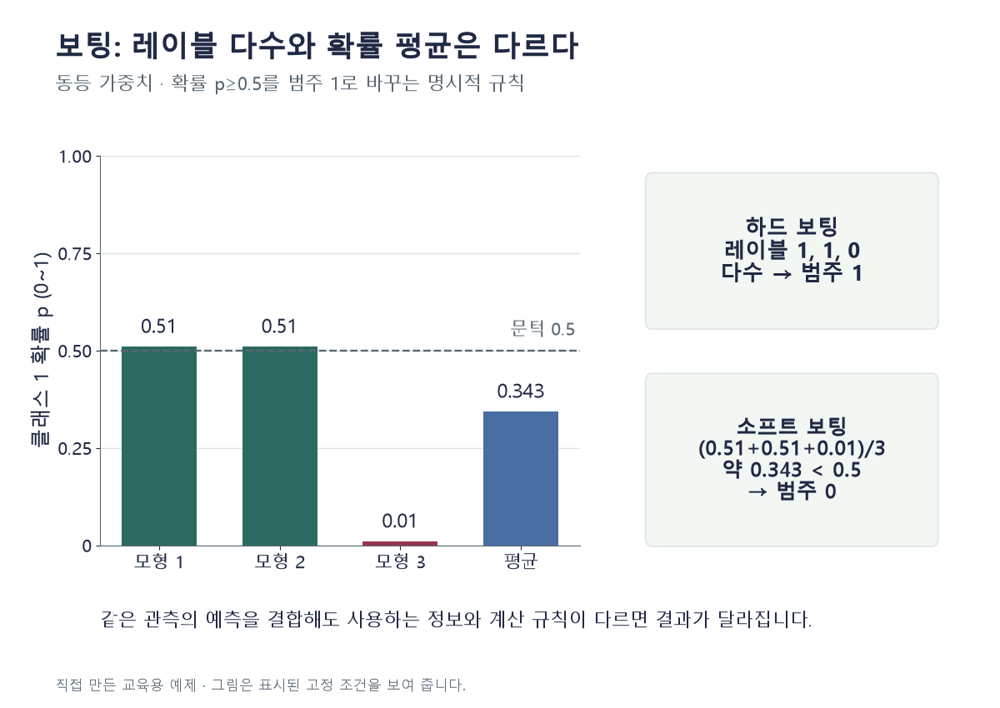

조건을 바꾸며 확인하기
동등 가중치, 0.5 이상을 1로 하는 명시적 규칙이다. 라이브러리 argmax의 동률 규칙과 구별하며 확률 보정이나 성능을 검증하지 않는다.
설명 그림과 비교하기
아래 그림과 표는 고정된 설명 예제입니다. 기본·변형 중 어떤 조건인지 캡션을 읽고, 바꾼 입력의 결과는 계산 칸에서 확인하세요.

같은 문제를 직접 골라 보기
클래스 1 확률 0.51·0.51·0.01. 동등 가중치, 모든 문턱 0.5.
조건을 더 바꾸면?
세 번째 확률만 0.90으로 바뀌면 두 결합의 범주는?
변형 풀이 확인
둘 다 1.
개별 레이블은 모두 1이고 평균 확률은 1.92/3=0.64다. 단일 예시로 어느 결합의 성능이 더 좋다고 판단할 수 없다.
레이블은 표 수, 소프트는 확률 평균.